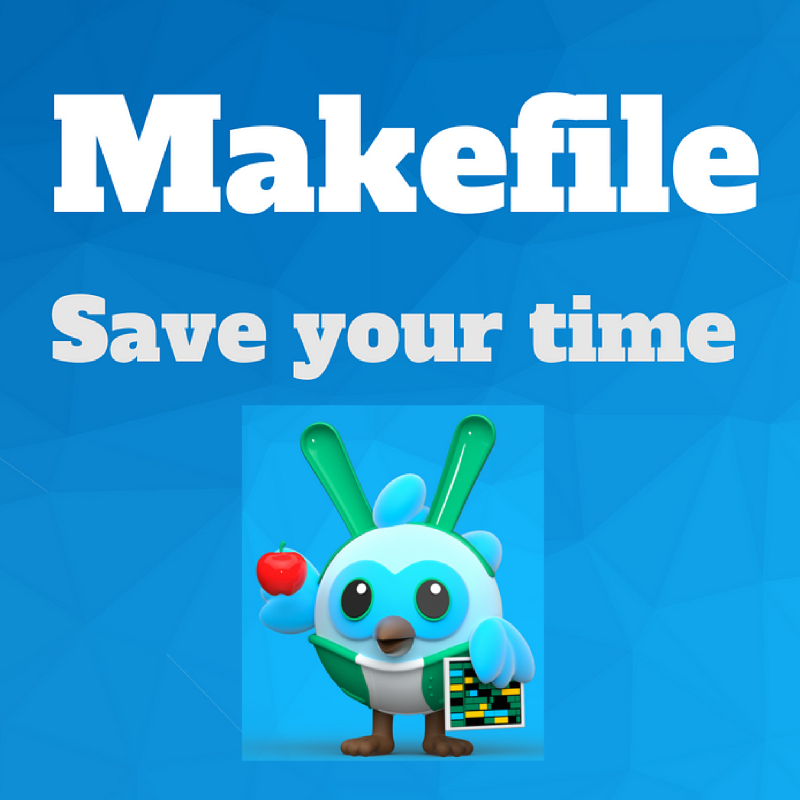
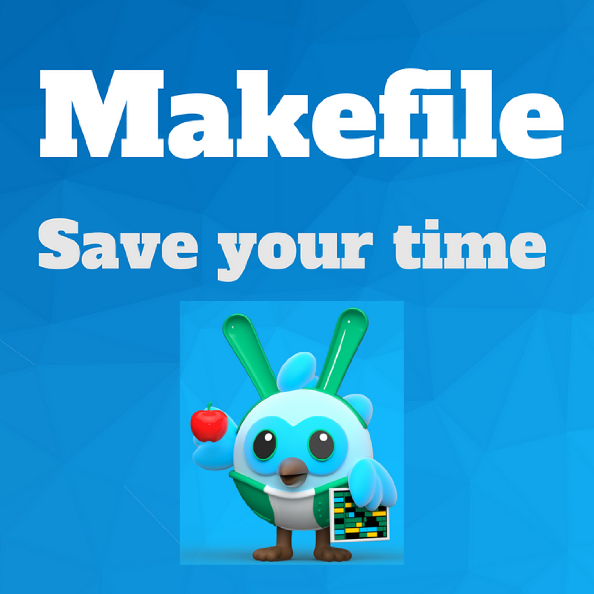
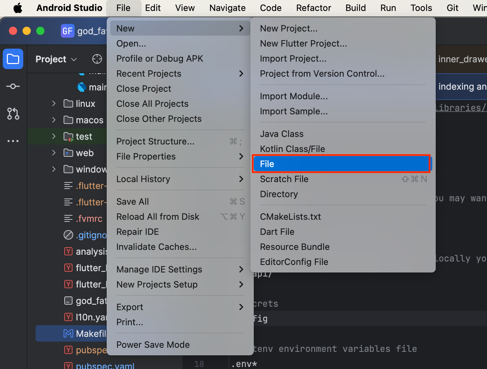
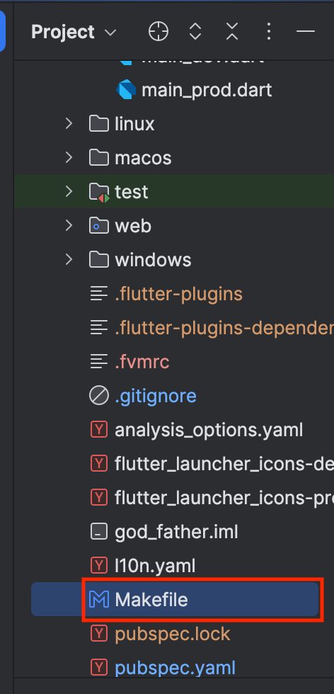
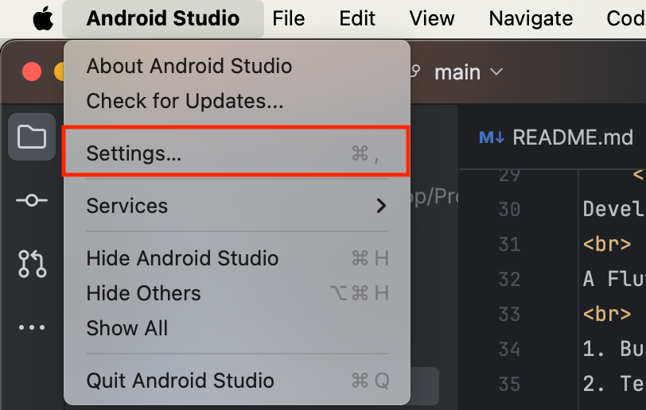
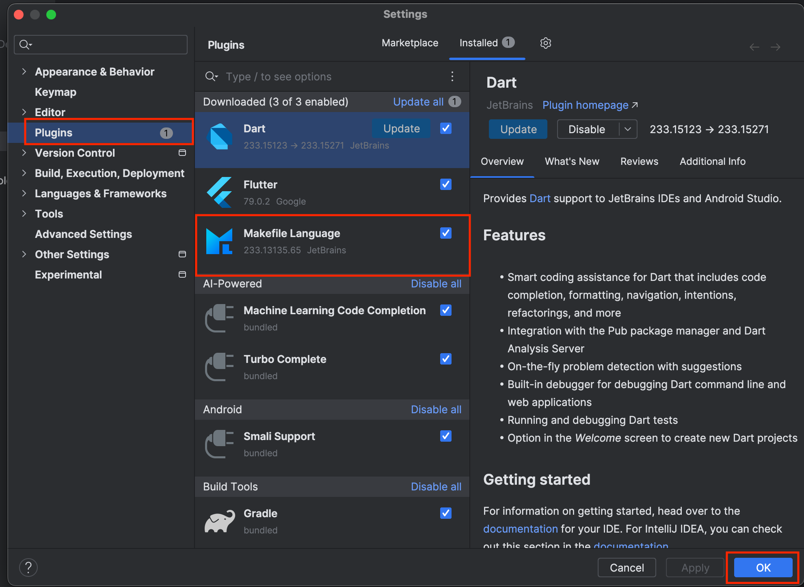
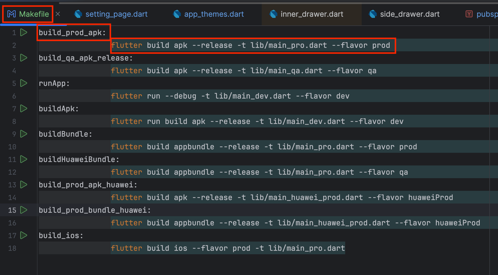
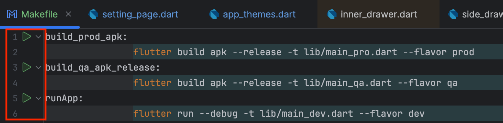

Welcome to Flutter Makefile Page
  Created By Mohamad Javad Pishraft (Jay)
 Created By Mohamad Javad Pishraft (Jay)
Makefile:
Developers often create Makefiles for their Flutter projects to automate common tasks like building, testing, and cleaning.
A Flutter Makefile typically includes rules for tasks such as:
1. Building: Compiling the Flutter app for different platforms (iOS, Android, web).
2. Testing: Running tests for the Flutter project.
3. Cleaning: Removing temporary or generated files.
4. Other tasks: Additional tasks like generating code, managing dependencies, or deploying the app.
Here's a demonstration of how to create Flutter Makefile:
1. From your IDE's menu, create a new file in the root directory of your project and name it Makefile:


2. Once Makefile is created your IDE will suggest you to install Makefile Language Plugin if not so:
2.1 open your IDE plugins setting and look for Makefile Language Plugin and install it.


3. Write your desired run configuration command in the Makefile. You need to specify short tag for each command

***** Congratulation Makefile has been set up successfully *****
4. Now you can run the command right from your Makefile by clicking on the Play button next to the commands tag

Or
Write run commands in IDE terminal in the following format:
"make Your Custom tag" eg: in my case: "make buildBundle" will execute:
"flutter build appbundle --release -t lib/main_pro.dart --flavor prod" in line 10